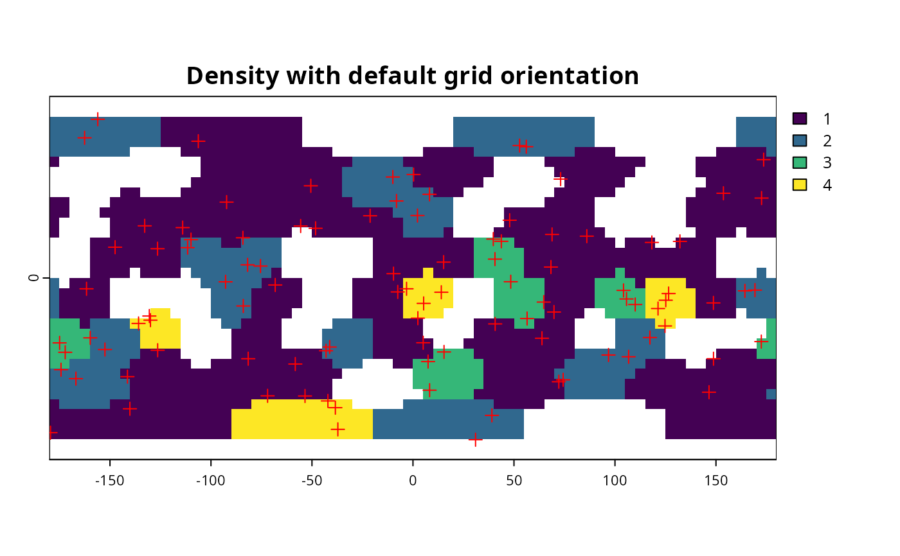
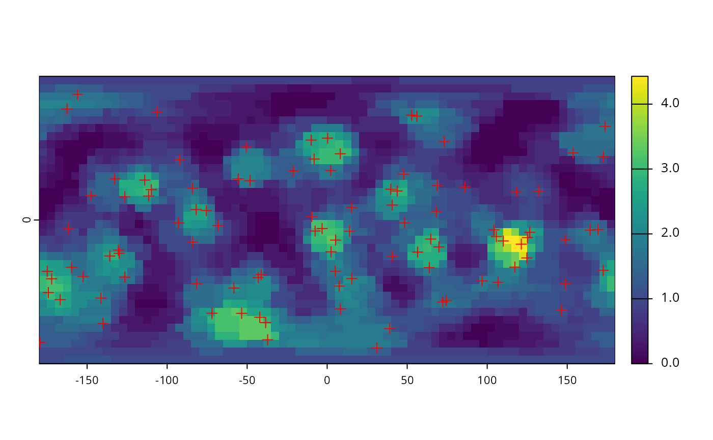

Icosahedral grid-based density estimation Spatial density estimation algorithm based on rotation of icosahedral grids.
Source:R/data-grapply.R
grapply.RdAny points set can be binned to an icosahedral grid (i.e. number of incidences can be counted), which will be dependent on the exact positions of grid cells. Rotating the grid in 3d space will result in a different distribution of counts. This distribution can be resampled to a standard orientation structure. The size of the icosahedral grid cells act as a bandwidth parameter.
Discretization with iteratively rotated icosahedral grids
Usage
gridensity(x, y, out, trials = 100, FUN = mean)
grapply(x, out, ...)
# S4 method for class 'data.frame,SpatRaster'
grapply(
x,
out,
y,
coords = c("long", "lat"),
iter = 100,
FUN = function(x) table(x$cell),
APP = mean,
miss = NA,
APP.args = NULL,
counter = TRUE,
FUN.args = NULL
)
# S4 method for class 'data.frame,trigrid'
grapply(
x,
out,
y = out,
coords = c("long", "lat"),
iter = 100,
FUN = function(x) table(x$cell),
APP = mean,
miss = NA,
APP.args = NULL,
counter = TRUE,
FUN.args = NULL
)
# S4 method for class 'matrix,SpatRaster'
grapply(x, out, ...)
# S4 method for class 'matrix,trigrid'
grapply(x, out, ...)
# S4 method for class 'data.frame,missing'
grapply(x, out, y, ...)
# S4 method for class 'matrix,missing'
grapply(x, out, y, ...)Arguments
- x
Matrix of longitude, latitude data,
sfclass, orSpatialPointsPoint cloud.- y
- out
trigrid,hexagridorSpatRasteroutput structure. If not given, then the input argument- trials
numericvalue, the number of iterations.- FUN
functionThe function to be applied on the iteration results. It defaults to the number of points, but it can be used to- ...
Arguments passed to class-specific methods.
- coords
characterColumn names to find longitude and latiude variables inx.- iter
numericValue, the number of iterations.- APP
functionThe function to be applied on the iteration results. If set toNULL, it will return the stack of results for subsequent processing.- miss
numericA single default value used in positions inoutwhere no value is produced byFUNin an iteration trial.- APP.args
listAdditional arguments passed toAPP.- counter
logicalShould a loop counter be shown?- FUN.args
listAdditional arguments passed toFUN.
Value
Either named numeric vector, or a SpatRaster object. If FUN is set to NULL, the output will be either a matrix or SpatRaster.
Details
The implemented algorithm 1) takes a point cloud (x)) and an icosahedral grid y 2) randomly rotates the icosahedral grid, 3) looks up the points falling on grid cells, 4) resamples the grid to a constant orientation object (either trigrid, hexagrid or SpatRaster). Steps 2-4 are repeated trial times, and then FUN is applied to every vector of values that have same spatial position.
Simple discretization of spatial data is subject to error due to the random assignment to grid cells. grapply offers a framework for the Monte Carlo estimation of the expectation of a function that normally can be applied to
a discretized set of points. This function FUN takes the input the data.frame (or matrix, which will be coerced into one) as argument, with the addition of a new variable cells, which includes
face identifiers for the point set given the random grid rotation (the output of locate). See examples for a step-by-step description.
Examples
# example to be run if terra is present
if(requireNamespace("terra", quietly=TRUE)){
# randomly generated points
x <- rpsphere(100, output="polar")
# bandwidth grid
gr <- hexagrid(deg=13)
# output structure
out <- terra::rast(res=5)
# Manual example - for understanding what FUN is doing
cell<- locate(gr, x)
yNew <- cbind(as.data.frame(x), cell=cell)
# this is the default function (here named CellCount)
CellCount <- function(x) table(x$cell)
counts <- CellCount(yNew)
# create facelayer
fl <- facelayer(gr, counts)
# and resample
oneOut <- icosa::resample(fl, out)
terra::plot(oneOut, main="Density with default grid orientation")
points(x, pch=3, col="red")
# for density estimation
o <- grapply(x=x, out=out,y=gr, iter=7, FUN=CellCount, miss=0)
# visualize results
terra::plot(o)
points(x, pch=3, col="red")
}
#> Selecting hexagrid with tessellation vector: c(3).
#> Mean edge length: 13.35 degrees.

#> 1
2
3
4
5
6
7
